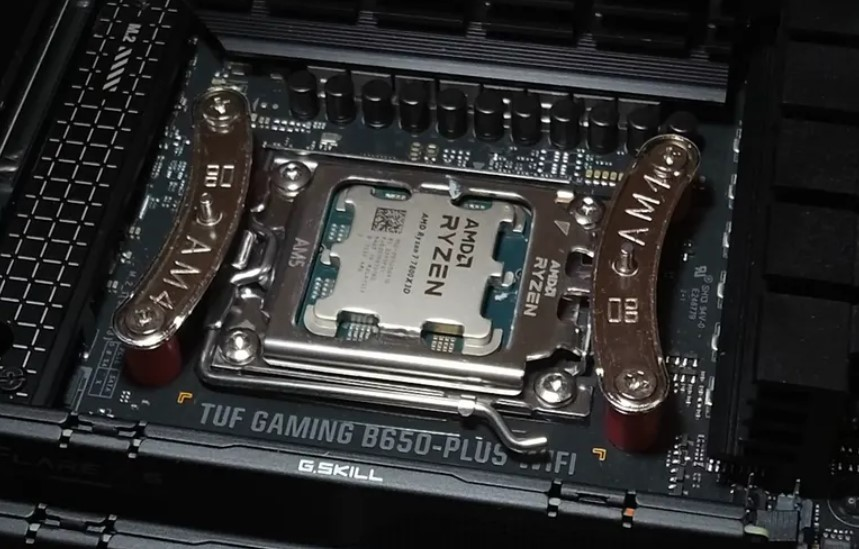

AMD Ryzen 7 9800X3D: A Comprehensive Review
Introduction
The AMD Ryzen 7 9800X3D, released on November 7, 2024, has quickly become the top-selling PC CPU, particularly among gaming enthusiasts. Priced at $629, it leverages AMD's Zen 5 architecture and second-generation 3D V-Cache technology, positioning itself as a premium choice for gamers and a strong contender in productivity tasks. This review delves into its specifications, performance benchmarks, and real-world applications, providing a detailed analysis for those considering an upgrade.

Specifications and Design
The Ryzen 7 9800X3D is built on the Zen 5 architecture, using TSMC's 4 nm process, and is designed for the AM5 socket. Here are its key specs:
| Spec | Detail |
|---|---|
| Cores/Threads | 8/16 |
| Base Clock | 4.7 GHz |
| Boost Clock | 5.2 GHz |
| L3 Cache | 96 MB (32 MB on-die + 64 MB 3D V-Cache) |
| TDP | 120 W |
| Price | $629 |
| Release Date | November 7, 2024 |
A notable design change is the second-generation 3D V-Cache, where the 64 MB additional cache is now placed below the core complex die (CCD), reducing thermal resistance by 46% compared to previous models. This allows for better heat dissipation, enabling higher sustained boost clocks, which is crucial for gaming. It also supports DDR5-5600 memory and is fully overclockable, enhancing its appeal for enthusiasts.
Performance Benchmarks
The Ryzen 7 9800X3D's performance has been extensively tested across gaming and productivity workloads, with reviews from various tech outlets providing detailed insights.
Gaming Benchmarks
It's clear from the data that the 9800X3D is a gaming powerhouse. Here's a table of key gaming benchmarks at 1080p, comparing it to the Ryzen 7 7800X3D and Intel's Core Ultra 9 285K:
| Game | Ryzen 7 9800X3D FPS | Ryzen 7 7800X3D FPS | Intel Core Ultra 9 285K FPS | Uplift vs. 7800X3D | Uplift vs. 285K |
|---|---|---|---|---|---|
| Baldur's Gate 3 | 160 | 126 | 100 | 26.9% | 60% |
| Starfield | 169 | 145 | 143 | 16% | 18% |
| F1 24 | 464 | 438 | 344 | 5.8% | 35% |
| Dragon's Dogma 2 | 129 | 111 | - | 16.2% | - |
| Final Fantasy XIV Dawntrail | 373 | 353 | 270 | 5.6% | 38.3% |
These results show the 9800X3D's dominance, with AMD claiming an average 8% improvement over the 7800X3D and up to 20% better than the 285K, as noted in The Verge. It also improves 1% low frame rates, ensuring smoother gameplay, particularly in titles like Baldur's Gate 3, where it reduces frame time excursions.
Productivity Benchmarks
For productivity, the 9800X3D holds its own, showing marked improvement over the 7800X3D thanks to higher clocks enabled by better thermals and a higher TDP. However, as noted by reviewers like Gamers Nexus and Tom's Hardware, it's generally not as fast as CPUs with higher core counts (like the Intel Core i9-14900K or AMD's own Ryzen 9 series) in heavily multi-threaded tasks. Here's a comparison based on available data:
| Test | Ryzen 7 9800X3D Result | Ryzen 7 7800X3D Result | Ryzen 7 9700X Result | Intel Core i9-14900K Result |
|---|---|---|---|---|
| Cinebench 2024 Multi-Core | 1,384 points | ~34% Lower* | ~4% Lower* | ~41% Higher* |
| 7-Zip Compression (MIPS) | 128K MIPS | ~13% Lower* | ~13% Lower* | N/A |
| 7-Zip Decompression (MIPS) | 146K MIPS | ~10% Lower* | ~6% Lower* | N/A |
| Blender (minutes, lower is better) | 12.5 mins | 15.9 mins | ~16% Slower* | Faster* |
| Adobe Photoshop (PugetBench) | ~11887 points* | ~10162 points* | Slightly Lower* | Significantly Lower* |
| Adobe Premiere Pro (PugetBench) | ~10050 points* | ~9100 points* | ~9100 points* | Higher* |
*Note: Asterisked values are approximate comparisons based on percentage differences or relative performance noted in Gamers Nexus/Tom's Hardware reviews, as direct scores for all CPUs in every test weren't available in a single table. Direct scores depend heavily on specific test setup.
While the 9800X3D is significantly faster than the 7800X3D in productivity (often 10-30%+, sometimes more like in Blender due to higher clocks), and even beats the 9700X in some scenarios, it doesn't consistently match higher core-count CPUs like the 14900K or Ryzen 9s in rendering, compilation, or heavy encoding. Its strength in Photoshop is notable, however. It's a solid choice for users needing top-tier gaming and competent, though not class-leading, productivity performance.
Efficiency and Power Consumption
Efficiency tests show the 9800X3D delivers high performance per watt, with results like 2.4 FPS/W in Baldur's Gate 3, slightly better than the 7800X3D's 2.3 FPS/W. Its 120 W TDP is higher, but the performance gains justify it, especially for gaming-focused builds. Power draw includes 98.4W in 7-Zip compression and 98.7W in Starfield, compared to the 7800X3D's 69W in Starfield, showing competitive efficiency.
Thermal Management and Overclocking
Thermal performance is improved with the inverted cache design, with tests showing a Tdie of 77°C under all-core workloads, L3 cache at 50°C, and hotspots at 50°C, using a 360mm liquid cooler. AMD recommends a 240-280mm liquid cooler for optimal performance, and it's fully overclockable with Precision Boost Overdrive (PBO), adding to its appeal for enthusiasts.
Comparison with Predecessors and Competitors
Compared to the Ryzen 7 7800X3D, the 9800X3D offers higher clocks (4.7 GHz base vs. 4.2 GHz) and better thermals, with an average 8-20% gaming uplift. Against Intel's Core Ultra 9 285K, it's up to 35% faster in gaming and $150 cheaper, offering better value. The Core i9-14900K, while stronger in productivity, lags in gaming, where the 9800X3D shines.
Who Should Buy It?
The Ryzen 7 9800X3D is ideal for gamers seeking the best performance, enthusiasts building high-end PCs, and upgraders from older AM4 systems. It's less suited for users focused solely on productivity, where CPUs with more cores might be better.
Conclusion
The AMD Ryzen 7 9800X3D is a game-changer, offering unmatched gaming performance with solid productivity capabilities. At $629, it's a premium but worthwhile investment, especially now that it's readily available at MSRP. For gamers and general users, it's hard to beat, providing a balance of performance, efficiency, and value.